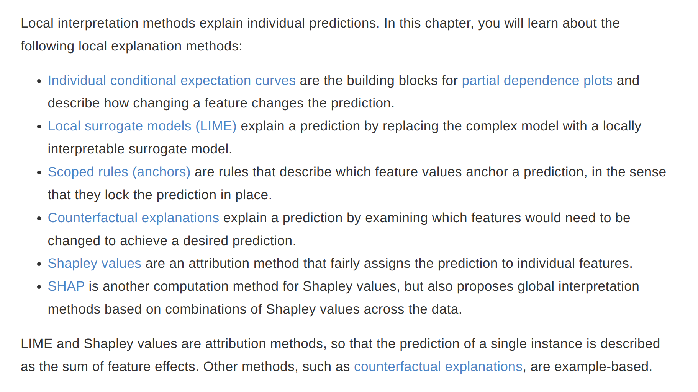
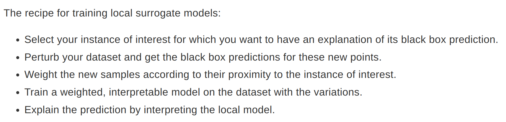
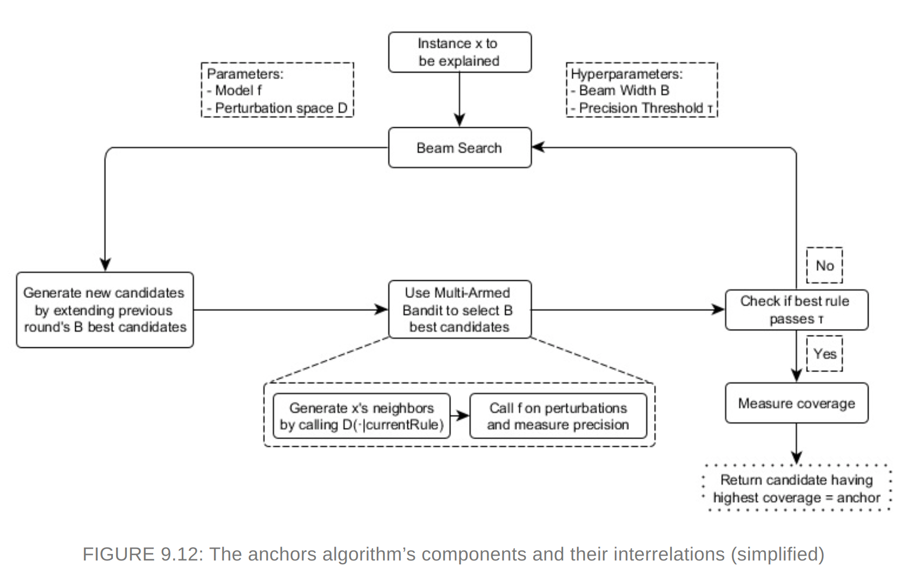
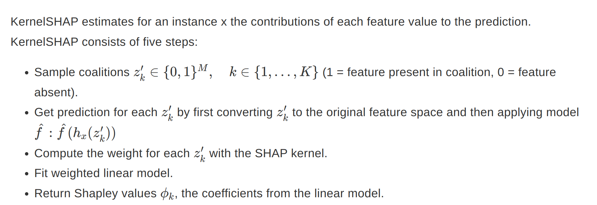
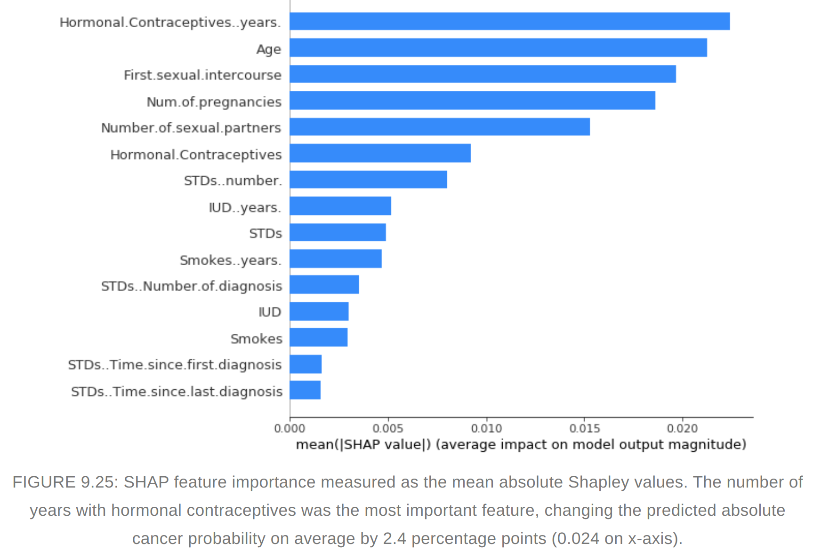
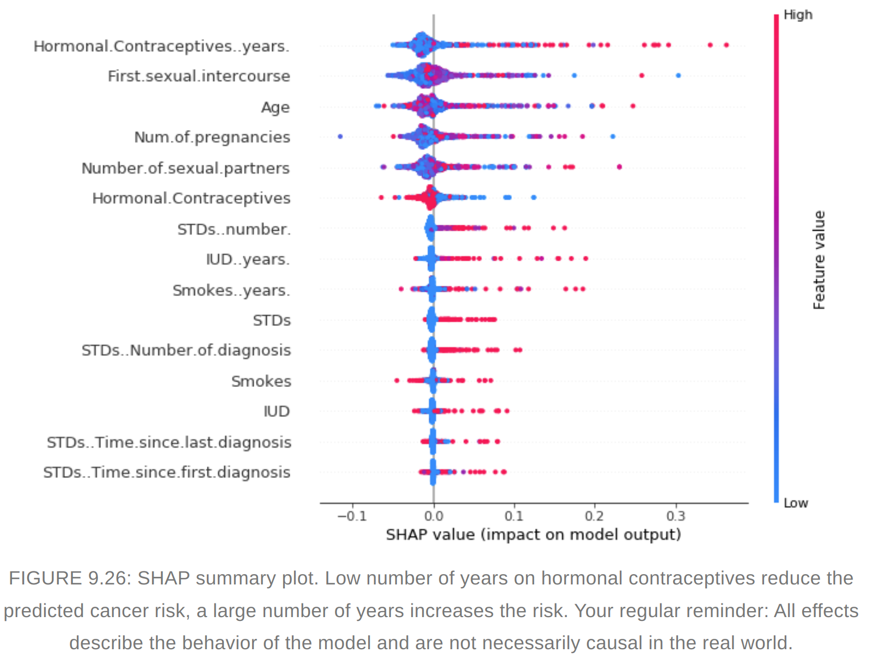
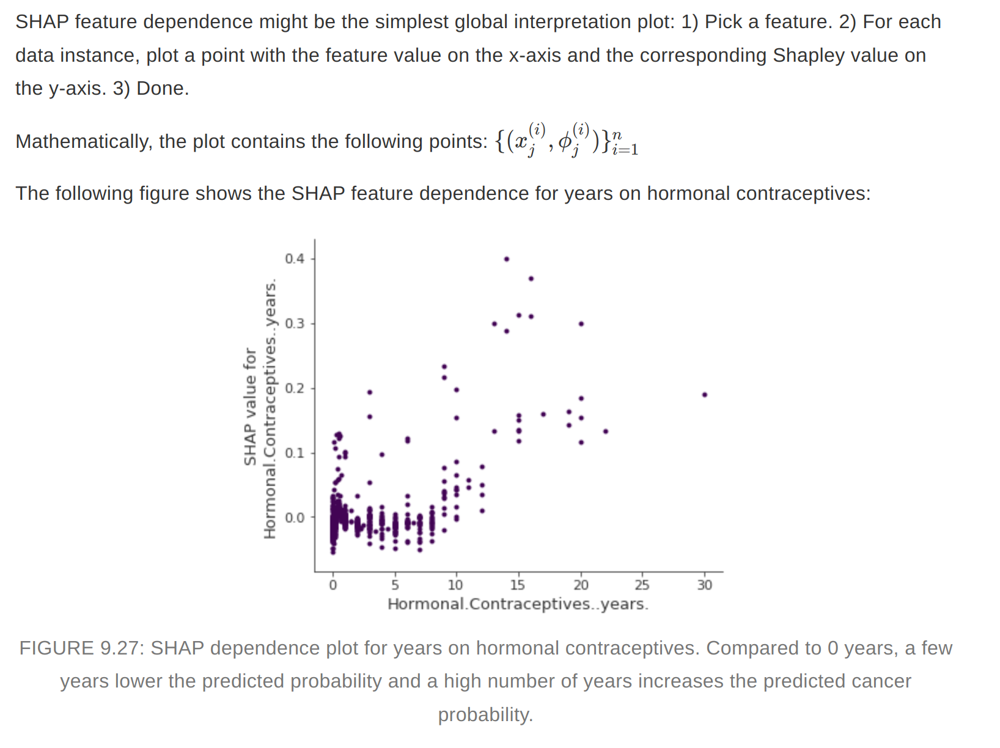
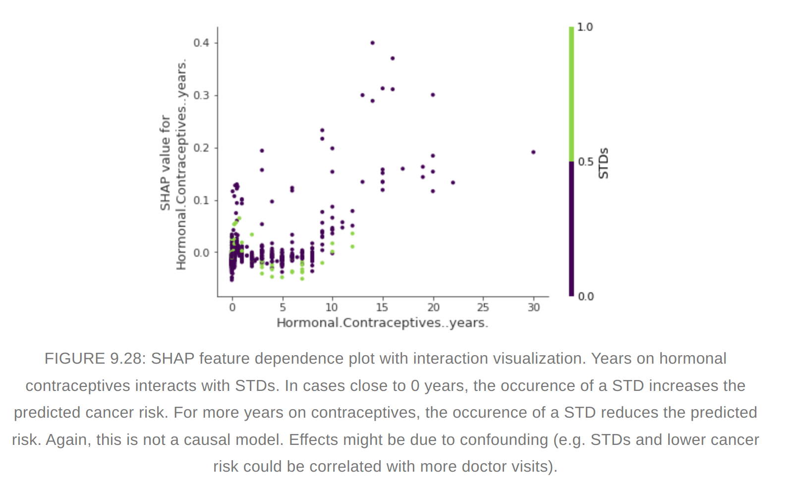

Local Model-Agnostic Methods

Individual Conditional Expectation (ICE)
- How the instance prediction changes when a feature changes
- The equivalent of PDP for a individual row is called ICE.
- ICE will provide more insight in case of interactions
- Centered ICE plot - Centre the curves at a certain point (may be at minimum) in the feature and display only the difference in prediction to this point.
- Derivative ICE plot - Individual derivaties of the prediction function with respect to the feature. It takes long time to compute and is impractical
Advantages and disadvantages
- ICE can uncover heterogeneous relationships
- Can display only one feature meaningfully
- Suffer from same points as pdp
- plot can become overcrowded - Add transparency or draw only a sample of the lines
- ICE does not show average. Combine ICE with PDP
LIME (Local Interpretable model-agnostic explanations)
- Interpretable models that are used to explain individual predictions of a black box machine learning models
- LIME generates a new dataset consisting of perturbed samples and the corresponsing predictions of the black box model
- On this new dataset LIME then trains an interpretable model, which is weighted by the proximity of the sampled instances to the instance of interest. 
- Defining a meaningful neighborhood around a point is difficult. LIME uses exponential smoothing kernel to define the neighborhood.
- LIME can be used for Text and Images also. In case of text new data is generated by randomly removing words from the original text.
- LIME for images - variations of the images are created by segmenting the image into “superpixels†and turning superpixels off or on. Superpixels are interconnected pixels with similar colors and can be turned off by replacing each pixel with a user-defined color such as gray. The user can also specify a probability for turning off a superpixel in each permutation.
- The fidelity measure (how well the interpretable model approximates the black box predictions) gives us a good idea of how reliable the interpretable model is in explaining the black box predictions in the neighborhood of the data instance of interest.
- The surrogate model can use other features than the original model was trained on.
- For defining the neighborhood we need to try different kernel setting and see if explanations make sense (Tabular data)
- Instability of explanations. Explanations of two very close points can be varied greatly. Repeating the sampling process can give different explanations.
Counterfactual Explanations
- A counterfactual explanation of a prediction describes the smallest change to the feature values that changes the prediction to a predefined output.
- Counterfactuals suffer from ‘Rashomon effect’
- Criteria for counterfactuals
- Counterfactual instance produces the predefined prediction as closely as possible
- Counterfactual should be as similar as possible to the instance regarding feature values. It should change as few features as possible
- Generate multiple diverse counterfactual explanations
- Counterfactual instance should have feature values that are likely
- Instead of trial and error, a loss function can be designed using the above four criteria and loss can be optimized to find counterfactuals. A genetic algorithm is used for optimization. (Nondominated Sorting Genetic Algorithm)
Advantages and disadvantages
- Clear explanations
- Does not require access to the data or the model. (Attractive for companies which are audited by third parties)
- Disadvantage - ‘Rashomon effect’.
Scoped Rules (Anchors)
Explains individual predictions of any black box classification model by finding a decision rule that “Anchors†the prediction sufficiently.
A rule anchors a prediction if changes in other feature values do not affect the prediction
Use perturbation based strategy to generate local explanations for predictions of black box ml models. The resulting explanations are expressed as easy to understand IF-THEN rules called “anchors”
Coverage - To which other possibly unseen instances anchors apply
Reinforcement learning is used to find the anchors

Anchors working The algorithm’s efficiency decreases with many features
Advantages and Disadvantages
- Easy to interpret
- works when model predictions are non-linear
- Model agnostic and parallelized
- Need high configuration with hyperparameter tuning
- Need discretization of numeric features
- Need many calls to the ML model
- Coverage is undefined in some domains
- Presently it is implemented only for tabular data.
Shapley Values
- A prediction can be explained by assuming that each feature value of the instance is a “player†in a game where the prediction is the payout. Shapley values – a method from coalitional game theory – tells us how to fairly distribute the “payout†among the features.
- Shapley value is the average marginal contribution of a feature value across all possible coalitions.
- The interpretation is how much a feature contributed to the prediction of this particular instance compared to the average prediction for the dataset. The sum of shapley values yields the difference of actual and average prediction
- The Shapley value is the average contribution of a feature value to the prediction in different coalitions.
Advantages and disadvantages
- The difference between the prediction and the average prediction is fairly distributed among the feature values of the instance – the Efficiency property of Shapley values. This property distinguishes the Shapley value from other methods such as LIME. LIME does not guarantee that the prediction is fairly distributed among the features. The Shapley value might be the only method to deliver a full explanation.
- The Shapley value allows contrastive explanations. Instead of comparing a prediction to the average prediction of the entire dataset, you could compare it to a subset or even to a single data point. This contrastiveness is also something that local models like LIME do not have.
- The Shapley value is the only explanation method with a solid theory.
- It requires a lot of computing time, only approximate solution is feasible.
- The exponential number of the coalitions is dealt with by sampling coalitions and limiting the number of iterations M. Decreasing M reduces computation time, but increases the variance of the Shapley value. There is no good rule of thumb for the number of iterations M. M should be large enough to accurately estimate the Shapley values, but small enough to complete the computation in a reasonable time.
- Shapley value method always use all the features.Humans prefer selective explanations as provided by LIME. SHAP can provide explanations with few features.
- Need access to the data
- It suffers from inclusion of unreaistic data instances when features are correlated
SHAP (Shapley Additive Explanations)
- KernelSHAP - A kernel based estimation approach for shapley values inspired by local surrogate models 
- As KernelSHAP uses linear regression for estimating shap values, we can go for sparse explanations.(I am not so sure whether the resulting coefficients would still be valid Shapley values though.)
TreeSHAP
- A variant of SHAP for tree based models
- It uses conditional expectation to estimate effects which has its drawbacks. The shapley value of a feature not included in the coalition will not be zero in case of conditional expectation.
SHAP Feature importance
- Shapley values can be combined into global explanations
- Features with large absolute shapely values are important 
- Difference between Permuatation feature importance and shapley value. Permutation feature importance is based on the decrease in model performance. SHAP is based on magnitude of feature attributions.
- Summary plot combines feature importance with feature effects. #### SHAP Summary plot  #### SHAP feature dependence plot  #### SHAP Interaction values
- The interaction effect is the additional combined feature effect after accounting for the individual feature effects. 
Clustering with Shapley values
We can cluster with shapley values. Features are often on different scales.The difficulty is to compute distances between instances with such different, non-comparable features.SHAP clustering works by clustering the Shapley values of each instance.This means that you cluster instances by explanation similarity. All SHAP values have the same unit – the unit of the prediction space. Any clustering technique can be selected